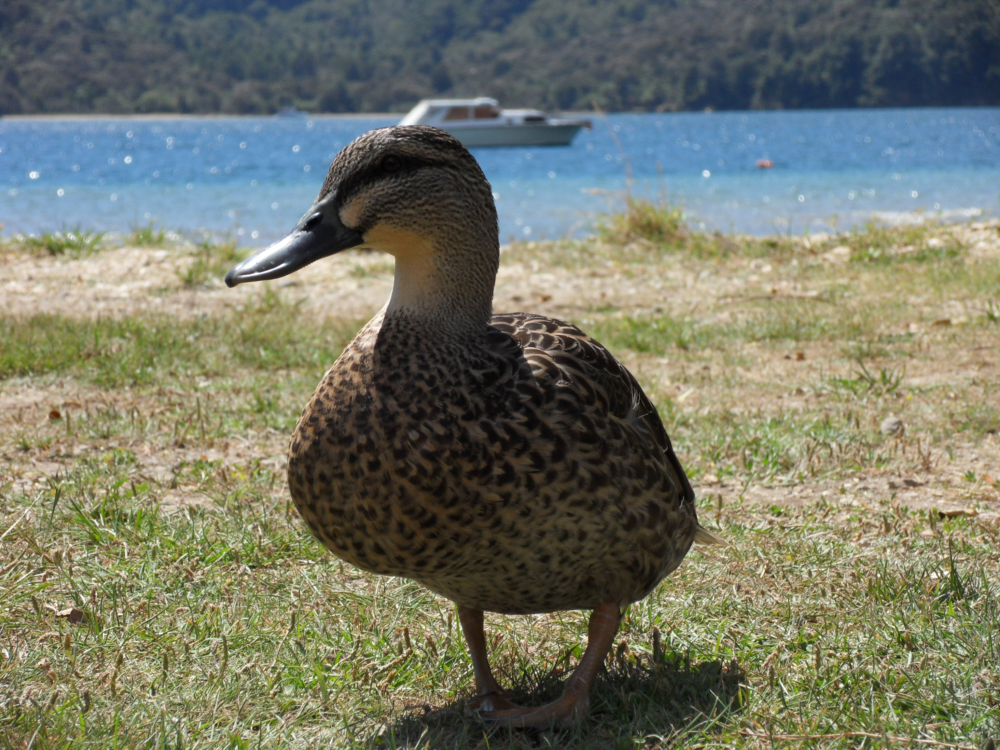
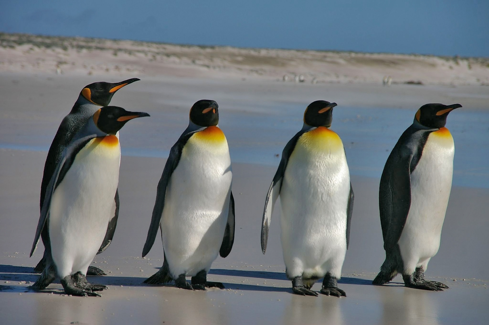

იხვები — ბატისნაირთა რიგის ფრინველთა რამდენიმე გვარი. გაერთიანებული არიან იხვისებრთა ოჯახში. ფართოდ არიან გავრცელებული ყველა კონტინენტზე, გარდა ანტარქტიდისა. იხვები იყოფა 3 ჯგუფად: ნამდვილი იხვები, ყვინთიები და ბატასინები. საშუალო და დიდი ზომის ფრინველებია. კარგად ცურავენ და ფრენენ. აქვთ სარეწაო მნიშვნელობა. ნამდვილ იხვებს გემრიელი ხორცი აქვთ. წონა მერყეობს 250-იდან 2000 გრამამდე. ყვინთიებისა და ბატასინების ხორცი უფრო დაბალი ღირსებისაა.
იხვები მიმოფრენი ფრინველებია. საქართველოში 8 გვარის 12 სახეობაა, რომელთა უმრავლესობა აქ მიმოფრენისა და ზამთრის პერიოდებში გვხვდება. ზოგი ბუდობს კიდეც ზოგიერთი შიდა წყალსატევების ნაპირებზე. საქართველოში (ჯავახეთში) მობუდარი იხვებიდან აღსანიშნავია: წითელი იხვი (Tadorna ferruginea), თეთრშუბლა იხვი (Anas penelope), გარეული იხვი (Anas platyrtynchos), წითელნისკარტა ყურყუმელა (Netta rufinae), ქოჩორა ყურყუმელა (Nyroca fuligata) და სხვა.
ვახუშტი ბაგრატიონის ცნობით, საქართველოში იხვები შემოიყვანეს და მოამრავლეს XVII საუკუნეში. აქ მისი სახორცედ გამოზრდა ყველა კლიმატურ

პინგვინები
პინგვინისნაირნი (ლათ. Sphenisciformes) — ფრინველთა რიგი. მოიცავს მხოლოდ 1 ოჯახს — პინგვინისებრნს (ლათ. Spheniscidae), რომელშიც ერთიანდება 6 გვარი და 17 სახეობა. მასა — 1,5-45 კგ, სხეულის სიგრძე 40-120 სმ. პინგვინისნაირნი ვერ ფრენენ, კარგად ცურავენ (36 კმ/სთ) და ყვინთავენ (20 მ-მდე). აქვთ საცურაო აპკით შეერთებული 3 თითი. ფრთა გადაქცეულია ფარფლად. ფეხები ცურვისას ასრულებენ საჭის როლს. გავრცელებული არიან ანტარქტიდის ნაპირებთან, სუბანტარქტიდის კუნძულებზე, ავსტრალიის, აფრიკისა და სამხრეთ ამერიკის სამხრეთ ნაპირებზე, გალაპაგოსის კუნძულებზე. ბუდობენ დიდ კოლონიებად, ზოგი — წყვილებად ან პატარ-პატარა გუნდებად. დებენ 1-2 კვერცხს, იკვებებიან თევზებით, თავფეხიანი მოლუსკებითა და კიბოსნაირებით.

ზღვის გოჭი
ზღვის გოჭი (ლათ. Cavia porcellus), გვინეური ზღვის გოჭი, ძუძუმწოვარი ცხოველი მღრღნელების რიგისა. მისი უკუდო სხეული 35 სმ აღწევს. უკანა თათზე 3 თითი აქვს, წინაზე - 4, ზურგი - მოყავისფრო-რუხია. ცხოვრობს პერუს მთისწინების ღია ადგილებში. ბინადრობს სოროებში პატარ-პატარა ჯგუფებად. წელიწადში 2-ჯერ შობს 1-4 ნაშიერს. ზღვის გოჭი (ან მისი ახლობელი სახეობა) სახორცედ მოაშინაურეს ინკებმა. ევროპაში შემოყვანილია XVI საუკუნეში. ზღვის გოჭს იყენებენ ბიოლოგიასა და მედიცინაში ფიზიოლოგიური, იმუნოლოგიური და სხვა ცდებისათვის. ტყვეობაში მრავლდება მთელი წლის განმავლობაში და შობს 6 ნაშიერს. ცუდად იტანს ტემპერატურის მკვეთრ ცვლილებას.